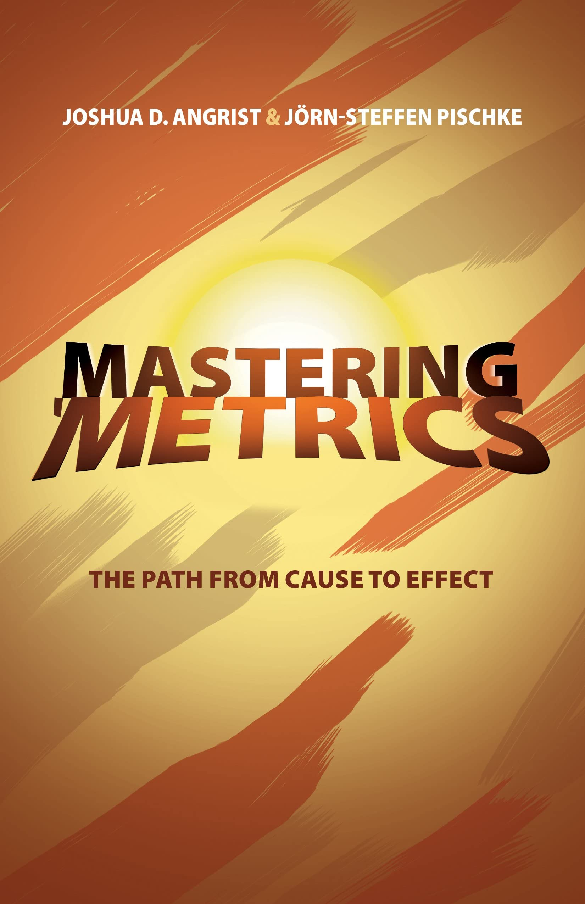
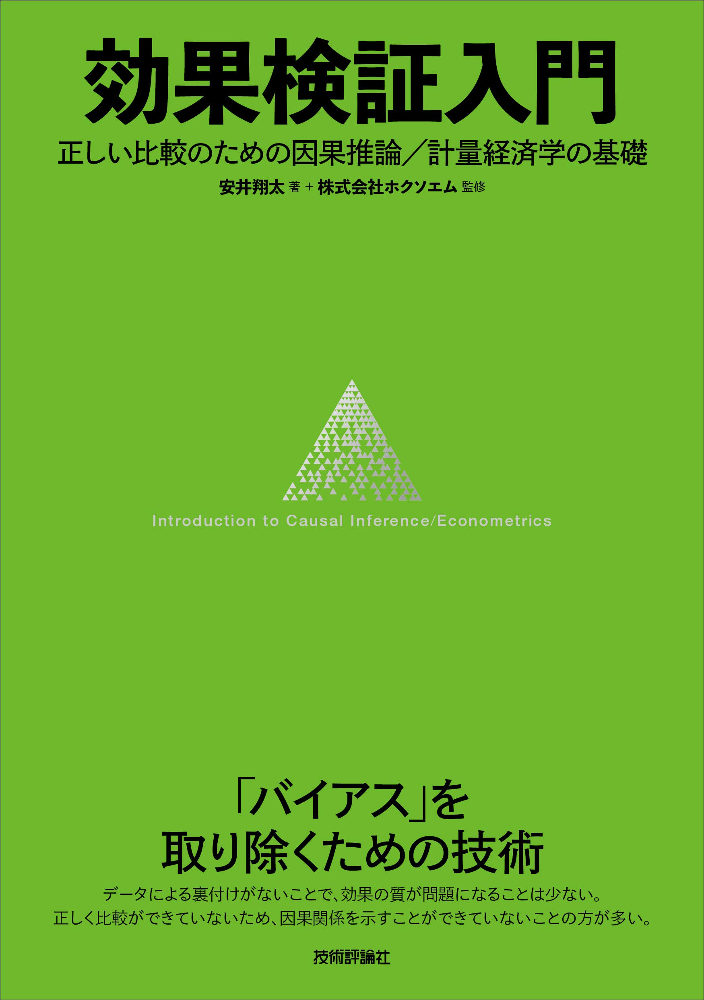

社会科学における因果推論
1/ ガイダンス
講義概要
講義概要
- 科目名: 社会科学における因果推論
- 講師: 宋財泫 (ソン ジェヒョン)
- 所属: 関西大学総合情報学部
- E-mail: song [at] kansai-u.ac.jp
- Homepage: https://www.jaysong.net
- 時間: 水曜日3限（13:00〜14:30）
- 教室: TD106
内容
因果推論の考え方
- 因果推論とは
- 内生性（自己選択バイアス）
- 因果推論の根本問題
因果推論の理論と方法
- 無作為化比較試験
- 回帰分析とその拡張
- 共変量調整
- マッチング
- 差分の差分法
- 回帰不連続デザイン
- 操作変数法
実習
実習はRで行う。第4〜6回目はRの導入および使い方についても解説（復習レベル）する。
- 本講義の分析はExcel, SPSS, Stata, Julia, Pythonなどでも可能
宋のR環境
- macOS Sequoia 15.3.2
- R version 4.4.3 (2025-02-28)
- RStudio 2024.12.1+563
- スライド、サポートページ、実習用資料の執筆環境
- Firefox 136.0.1
- Quarto 1.6.42
- R package {quarto} 1.4.4

前提知識
第4回講義までに以下の本の内容が理解できていれば問題ない。
- 浅野正彦・矢内勇生. 2019『Rによる計量政治学』オーム社.
統計学
- 仮説検定
- 統計的有意性検定
- \(p\)値\(\neq\)帰無仮説が正しい確率
- 回帰分析
R
- データクリーニング、回帰分析、可視化などができるならベスト
- 第4〜6回にはRの復習を行う
- 第7回以降の実習（第8・10・12回）は反転授業の形式を採用
- 以下の内容が分かればOK
資料
サポートページ
- https://www.jaysong.net/kandai-ci/（ブラウザーの「お気に入り」に登録）
教科書
- なし（サポートページ、およびスライドのみ使用）
参考書（R）
- 宋財泫・矢内勇生.『私たちのR: ベストプラクティスの探求』（Web-book）
- 松村優哉 他. 2021. 『改訂2版 RユーザのためのRStudio[実践]入門』技術評論社
- Garrett Grolemund and Hadley Wickham. 2017. R for Data Science. O’Reilly.


参考書（因果推論）
- 理論
- 初級：松林哲也. 2021.『政治学と因果推論』岩波書店.
- 初級：Angrist, Joahua D., and Jorn-steffen Pischke. 2014. Mastering ’Metrics: The Path from Cause to Effect. Princeton University Press.
- 中級： Angrist, Joahua D., and Jorn-steffen Pischke. 2008. Mostly Harmless Econometrics: An Empiricist’s Companion. Princeton University Press.（邦訳あり）
- 実装
- Cunningham, Scott. 2021. Causal Inference: The Mixtape. Yale University Press.（邦訳あり）
- 安井翔太. 2020. 『効果検証入門』技術評論社.
- 高橋将宜. 2022. 『統計的因果推論の理論と実装』共立出版.




:::
評価
評価
期末課題の詳細は学期末にアナウンス
- 平常点：70%
- 授業への貢献度
- 期末課題：30%
- 研究構想の発表（または、提出）
その他
オフィス・アワー
宋が研究室に待機し、事前予約なしに相談、質問などが可能な時間
- 場所：TA227研究室（A棟の2階）
- 毎週水曜日2限 (10:40〜12:10)
- 上記の時間外は事前予約が必要（メール、対面）
分析環境の準備
自分のPCにR + RStudioがインストールされている場合
- Rのバージョンが4.3.0以上であればOK
自分のPCにR + RStudioがインストールされていない場合
\(\Rightarrow\) 少しでも不安があれば宋と相談しよう！
方法1： 自分のPCにインストールする。
方法2： クラウド版のR/RStudioを使用する。
- 参考資料：サポートページ > Rの使い方